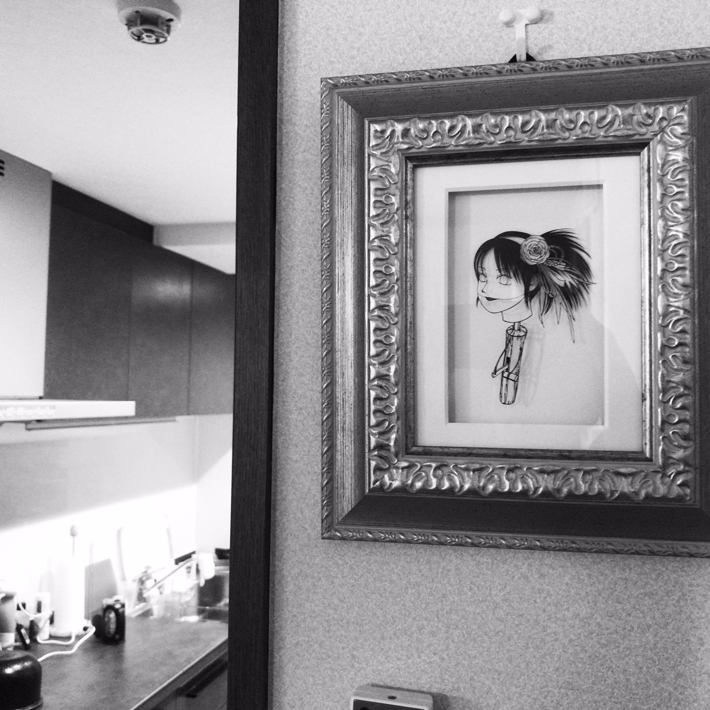
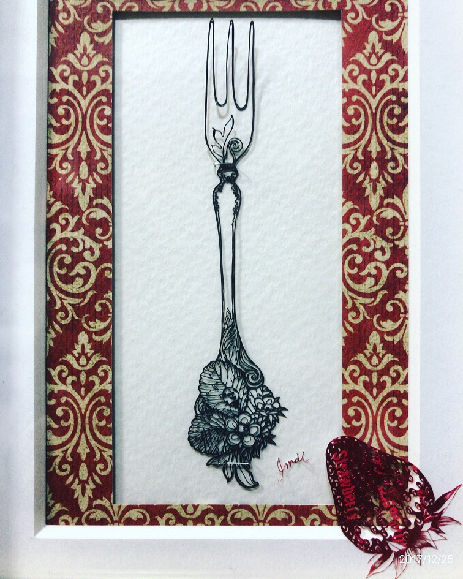

Sayaka Imai
I came across her works at Xmas Art Festa in Ginza, Tokyo. It was December 2016. At that time, I thought they were three-dimensional paintings, and I was looking at them from various angles. So I was so surprised when Ms. Sako, a gallerist at Seizan Gallery, taught me that they were papercuts.
Xmas Art Fair in Dec.-2016
I first met Ms. Sayaka Imai's works at Xmas Art Festa in Ginza, Tokyo.
Idle-1
She is one of my guardian angels.

Idle-2
I believe that putting "Idle-2" a little higher up than "Idle-1" seems to increase my luck.
My Guardian Angels
I met my destiny. Thanks to theirs, it was the best year ever.
Honey Bean Spoon
This strawberry is made with the wrap paper of strawberry chocolate.

Ladybird Fork
Where are we going to stay? A ladybug and a honey bee are discussing. I wonder if they can decide soon.